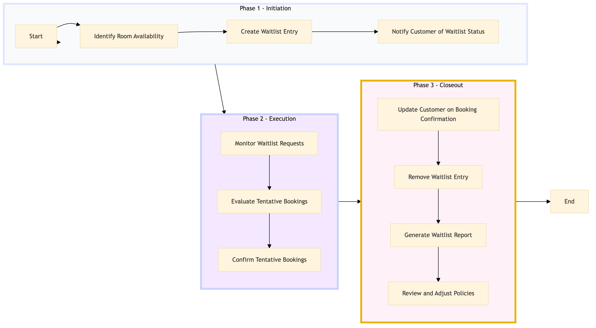

| Role | Steps |
|---|---|
| Revenue Manager | 1.1 1.2 2.1 2.2 2.3 3.2 3.4 |
| Front Desk Agent | 1.3 3.1 |
| Step | Name | Role | System | Input | Output | KPI | Dec? | Exc? | Pain Point / Risk |
|---|---|---|---|---|---|---|---|---|---|
| 1.1 | Identify Room Availability | Revenue Manager | Oracle OPERA Cloud | Customer reservation request | Room availability report | Less than 2 minutes | Y | N | Accurate real-time room availability data is critical. |
| 1.2 | Create Waitlist Entry | Revenue Manager | Oracle OPERA Cloud | Room availability report | Waitlist entry in Oracle OPERA Cloud | Less than 3 minutes | N | Y | Handling exceptions for urgent waitlist requests. |
| 1.3 | Notify Customer of Waitlist Status | Front Desk Agent | Oracle OPERA Cloud, Marriott Bonvoy CRM | Waitlist entry in Oracle OPERA Cloud | Customer notification via email or phone | Less than 5 minutes | N | Y | Ensuring timely and accurate customer communication. |
| 2.1 | Monitor Waitlist Requests | Revenue Manager | Oracle OPERA Cloud, IDeaS G3 RMS | Waitlist entries in Oracle OPERA Cloud | Updated waitlist report | Daily review within 1 hour | Y | N | Balancing waitlist management with other revenue tasks. |
| 2.2 | Evaluate Tentative Bookings | Revenue Manager | Oracle OPERA Cloud, IDeaS G3 RMS | Tentative bookings in Oracle OPERA Cloud | Evaluation report | Less than 10 minutes per booking | Y | N | Assessing the impact of tentative bookings on overall occupancy. |
| 2.3 | Confirm Tentative Bookings | Revenue Manager | Oracle OPERA Cloud, IDeaS G3 RMS | Evaluation report | Confirmed booking in Oracle OPERA Cloud | Less than 5 minutes per booking | N | Y | Handling exceptions for tentative bookings. |
| 3.1 | Update Customer on Booking Confirmation | Front Desk Agent | Oracle OPERA Cloud, Marriott Bonvoy CRM | Confirmed booking in Oracle OPERA Cloud | Customer confirmation notification via email or phone | Less than 5 minutes | N | Y | Ensuring timely and accurate customer communication. |
| 3.2 | Remove Waitlist Entry | Revenue Manager | Oracle OPERA Cloud | Confirmed booking in Oracle OPERA Cloud | Updated waitlist in Oracle OPERA Cloud | Less than 2 minutes | N | Y | Handling exceptions for removing waitlist entries. |
| 3.3 | Generate Waitlist Report | Revenue Manager | Oracle OPERA Cloud, IDeaS G3 RMS | Final waitlist status | Waitlist report for analysis | Daily within 1 hour | N | Y | Analyzing waitlist data for future planning. |
| 3.4 | Review and Adjust Policies | Revenue Manager | Oracle OPERA Cloud, IDeaS G3 RMS | Waitlist report for analysis | Updated waitlist policies | Weekly review within 1 hour | Y | N | Balancing customer satisfaction with hotel occupancy. |
Process for managing waitlists and tentative bookings at a Marriott full-service hotel using Oracle OPERA Cloud PMS.